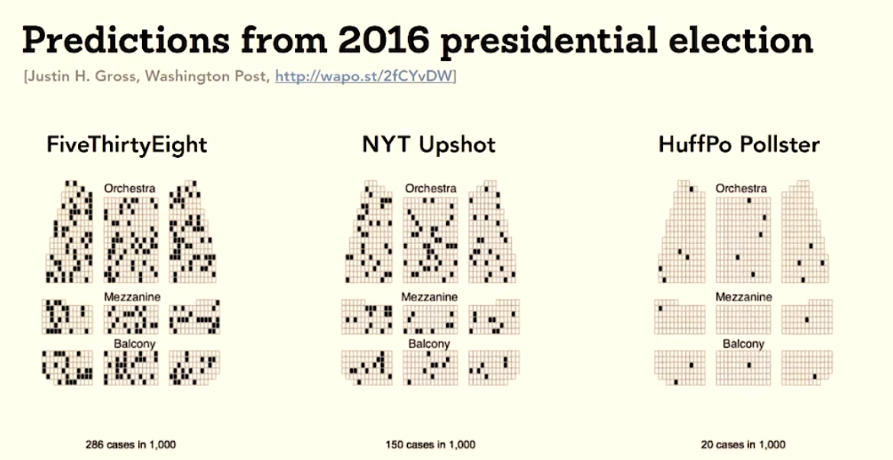
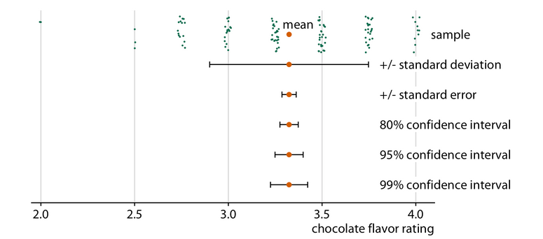
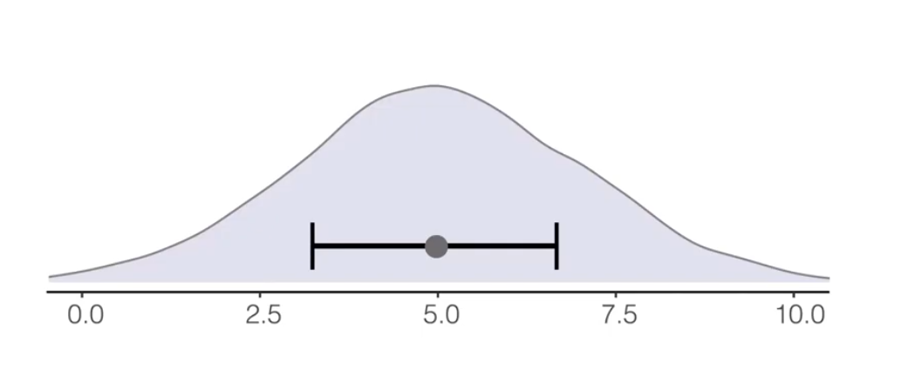
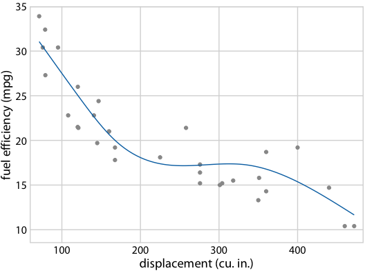

Distinguish variability among observations from uncertainty in an estimated mean.
Create and interpret confidence intervals displayed as bands and point ranges.
Combine estimates and their intervals with the underlying observations or distributions.
Communicate probabilities using frequency framing and hypothetical outcomes.
Recognize misleading interpretations of error bars, shaded bands, and forecast cones.
Explain how bootstrap resamples produce a percentile confidence interval for a mean.
Why bother?
A point or a line can look precise even when it represents an uncertain estimate.
An interval that is familiar to a statistician may convey something quite different to a general audience
Framing probabilities as frequencies
Figure 1: Three historical forecasts assign Trump approximately 28%, 15%, and 2% chances of winning. The slide credits Justin H. Gross, Washington Post.
When called upon to judge probability, people actually judge something else and believe they have judged probability – Daniel Kahneman
Interpreting a probabilistic forecast
Trump won the election. Does that result alone establish that all three models were bad?
How could we make the probabilities more intuitive to an audience unfamiliar with forecasting?
An outcome with a probability below 50% is less likely than its alternative, but is it impossible? Think about rolling a particular number on a fair six-sided die.
No. A probabilistic forecast is not a promise that the most likely outcome will occur.
Making probabilities tangible
Frequency framing expresses a probability as a share of a collection of outcomes.

Figure 2: The same forecasts represented by dark seats among 1,000 seats: 286, 150, and 20 winning scenarios. The first panel uses a finer value than the rounded percentage above. Credit: Justin H. Gross, Washington Post, as cited in the lecture.
A distribution of possible election outcomes
Figure 3: Historical FiveThirtyEight forecast distributions for electoral votes.
One hundred hypothetical elections
Figure 4: A historical FiveThirtyEight screenshot summarizes 100 scenarios: 10 Trump wins, 89 Biden wins, and one scenario without an Electoral College majority.
Reading error bars and bands
Figure 5: An intentionally unlabeled interval example from the lecture.
What do the intervals represent?
What information would you need before interpreting these intervals?
Could you tell whether they show the spread of penguin body masses or uncertainty in a mean?
We need to know what the point estimates and intervals represent: for example, means with standard deviations, confidence intervals for means, or some other summary.
For confidence intervals, we also need the confidence level and an explanation of how they were calculated.
Spread and uncertainty answer different questions
Display
What it describes
Mean ± one standard deviation (SD)
Spread of the individual observations around their mean
Mean ± one standard error (SE)
Uncertainty in the estimated mean; approximately a 68% CI under a normal approximation
95% confidence interval (CI) for the mean
An interval targeting 95% coverage; often approximately mean ± 1.96 SE, or calculated using another interval method
Same observations, different intervals

Figure 6: Different intervals for the same chocolate-rating sample. The labels distinguish standard deviation, standard error, and three confidence levels. Adapted from Claus O. Wilke, Fundamentals of Data Visualization, Figure 16.5; data credit: Brady Brelinski, Manhattan Chocolate Society.
Interpreting confidence intervals
If we repeatedly sampled data and constructed intervals in the same way, about 95% of those intervals would contain the population quantity
It’s common to compute the confidence interval and standard error using bootstrapping
Interval endpoints are not walls

Figure 7: A schematic distribution continues beyond the displayed interval. The drawing illustrates why an interval should not automatically be read as the full range of possible values; it does not specify a confidence level.
Nor should we assume that every kind of error bar must exclude observations: a minimum-to-maximum interval includes the observed range by construction. The interpretation depends on what the interval actually represents.
Overlap is not a general significance test
Figure 8: The lecture’s overlap schematic illustrates that overlapping intervals can accompany a statistically significant difference under particular assumptions. Its printed p-values are not universal thresholds for interpreting error bars.
Compare the difference itself
The amount of overlap alone does not establish whether two estimates differ significantly.
If the question concerns a difference, calculate and visualize an interval for the difference itself, using a method appropriate to the data.
Showing alternative outcomes
Figure 9: A fitted spline and interval band compared with alternative curves drawn from a posterior distribution. Source: Wilke, Fundamentals of Data Visualization, Figure 16.18, using Motor Trend car data.
Hypothetical outcome plots

Figure 10: An animated hypothetical outcome plot of alternative fitted curves. Source: Wilke, Fundamentals of Data Visualization, Figure 16.22.
Forecast uncertainty is not physical size
Figure 11: A hurricane forecast shown as a cone and as a collection of possible tracks, reproduced from the lecture.
Reading the forecast cone
What might an unfamiliar reader think the widening shaded region represents?
How could the alternative tracks help, and what explanation would they still need?
Does the widening cone describe a growing storm, or growing uncertainty about the location of its center?
Position uncertainty, not storm size
Its widening instead represents increasing uncertainty about the future position of the storm’s center.
Its boundary is not a line separating dangerous from safe locations: the center can move outside the cone, and hazardous weather can extend beyond it.
A collection of different models is not automatically a set of equally probable outcomes.
set.seed(531)ggplot(cars, aes(x = Horsepower, y = Origin)) +geom_point(shape ='|', color ='grey', alpha =0.5, size =5) +geom_pointrange(stat ='summary', fun.data = mean_cl_boot)
A distribution behind the mean and interval
set.seed(531)ggplot(cars, aes(x = Horsepower, y = Origin)) +geom_violin(color =NA, fill ='steelblue', alpha =0.4) +geom_pointrange(stat ='summary', fun.data = mean_cl_boot)
Spread versus precision
Most of the individual cars fall outside the confidence interval for their origin’s mean. Does this indicate that the interval was calculated incorrectly?
What would you expect to happen to the interval if we collected more independent observations from the same population, with a similar spread of horsepower values?
Is the interval describing variation among individual cars, or uncertainty in the mean horsepower?
More observations can give a more precise mean
No. A confidence interval for the mean is not intended to contain 95% of the cars.
With more independent observations and similar variability, we generally expect the confidence interval to become narrower, even though the spread of individual horsepower values remains similar.
Label what the interval represents
Always identify what an interval represents in its caption or accompanying text.
Standard deviations, standard errors, and confidence intervals can be drawn with the same marks, but they answer different questions.